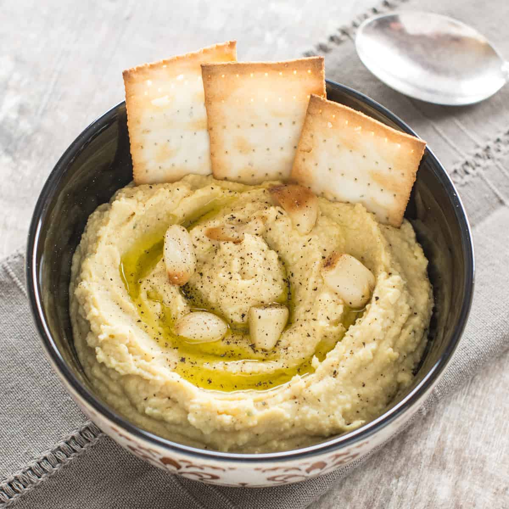

Garlic Parmesan Hummus

Description
This garlic hummus is easy to make by blending sweet roasted garlic and Parmesan cheese with your
everyday hummus ingredients for a deliciously rich and extra creamy dip that will leave you begging for more!
Ingredients
- 1 heated garlic, top third sliced off and discarded
- 1 teaspoon olive oil
- salt and freshly ground black pepper to taste
- 1 can chickpeas, drained and rinsed
- 1/4 cup tahini
- 1/4 cup freshly grated Parmesan cheese
- 3 tablespoons extra-virgin olive oil
- 2 tablespooons lemon juice
- 1/2 teasoon freshly ground black pepper
- 1/4 teaspoon cumin
- 1/4 teaspoon salt
Directions
- Preheat the oven to 375 degrees F (190 degrees C).
- Place garlic head on a piece of aluminum foil. Drizzle olive oil over garlic and season with salt and pepper. Wrap foil around
garlic to fully enclose and place on a baking sheet.
- Bake in the preheated oven until roasted and tender, about 40 minutes. Remove garlic from aluminum foil; set aside until
cool enough to handle, about 10 to 20 minutes. Remove garlic cloves from the peels.
- Combine roasted garlic, chickpeas, tahini, Parmesan cheese, olive oil, lemon juice, 1/2 teaspoon black pepper, cumin,
and salt in a food processor or blender until smooth.
- Bon Appetit!